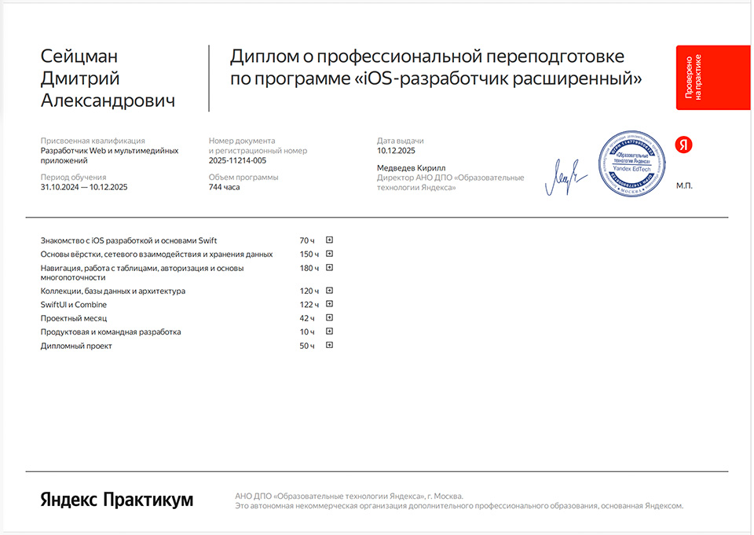

Обо мне
Меня зовут Дмитрий. Я — iOS-разработчик, создающий мобильные приложения на Swift с фокусом на архитектуру, стабильность, визуальную аккуратность и понятный пользовательский опыт.
Я работаю со SwiftUI и UIKit, проектирую приложения по MVVM и MVP, использую Core Data, SwiftData, Combine, async/await, REST API, CloudKit и современные инструменты экосистемы Apple. Для меня важно не просто “чтобы экран открылся”, а чтобы продукт был логичным, надёжным и приятным в использовании — редкий случай, когда кнопка действительно должна делать то, что от неё ждут. Без сюрпризов, как в дешёвом роутере.
Один из моих ключевых проектов — Snapty, опубликованное в App Store приложение для фотографов и видеографов. Оно помогает планировать съёмки, вести клиентскую базу, работать с напоминаниями, заметками, чеклистами и статистикой. В этом проекте я прошёл полный путь: от идеи и проектирования интерфейса до реализации, локализации, подготовки к публикации и выпуска в App Store.
Я самостоятельно создаю продукты, продумываю структуру, дизайн, пользовательские сценарии и техническую реализацию. В работе активно использую AI-инструменты для ускорения разработки, генерации идей, анализа кода и улучшения UX, но финальные решения всегда принимаю как разработчик, который отвечает за результат, а не просто нажимает “сгенерировать” и молится компилятору.
Мне близок подход, в котором чистый код, продуманная архитектура и хороший интерфейс идут вместе. Я постоянно изучаю новые фреймворки Apple, улучшаю инженерные навыки и стараюсь делать приложения, которые выглядят современно, работают стабильно и решают реальные задачи пользователей.
Этот сайт я создал с нуля на HTML и JavaScript — с лёгкой помощью ChatGPT 😄. Веб-разработка не мой основной стек, но, как видите, страница всё же открывается, а это уже маленькая победа над хаосом фронтенда.
Сейчас я открыт к новым возможностям: работе в команде, интересным продуктовым задачам, разработке iOS-приложений под ключ и проектам, где нужно не просто писать код, а создавать работающий продукт.
Образование
Яндекс Практикум — программа подготовки iOS-разработчиков. Диплом подтверждает прохождение обучения и выполнение учебных проектов.
